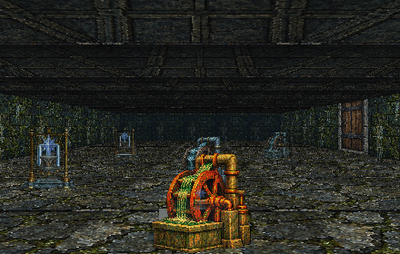
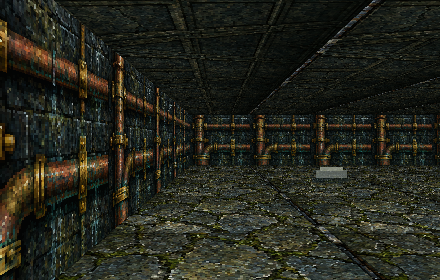

Build your party
Create a six-character band, advance their abilities, equip your finds, and prepare spells for what lies ahead.
A WORLD OF DUNGEONS, MAGIC & MYSTERY
Gather six adventurers. Explore dangerous dungeons. Discover hidden passages, master forgotten spells, and bring your heroes from one adventure to the next.
Free to play in your browser · Keyboard and mouse · MP27 preview
THE ADVENTURE AWAITS
World of Maxxia brings the feel of classic grid-based party RPGs to a modern browser, with a flexible engine that supports new stories and familiar dungeon-crawling pleasures.
Create a six-character band, advance their abilities, equip your finds, and prepare spells for what lies ahead.
Cross towns, labyrinths and authored terrain; find secrets, overcome obstacles, and confront strange creatures.
Unmask illusory walls and false doorways. Solve sequences, alignments and combination puzzles.
BEYOND THE THRESHOLD
Artwork and renderer previews from the supplied MP27 project. These are engine-rendered examples, not interactive browser screenshots.


THE STORIES ARE YOURS TO MAKE
Build modular RPG adventures from structured content: maps, monsters, items, NPCs, quests, puzzles and reusable scripts. Load them as individual campaigns in World of Maxxia, keeping adventurers and portable saves between stories.
The source repository includes a C# WinForms editor project for Windows, a command-line pack authoring toolkit, contract schemas and sample adventure content.
BEGIN YOUR NEXT EXPEDITION
No account required for local browser play. Your saves remain in your browser; export a portable save before changing devices or sites.
Enter World of MaxxiaMP27 public preview · Best experienced on a desktop browser · Not fully verified on touch/mobile